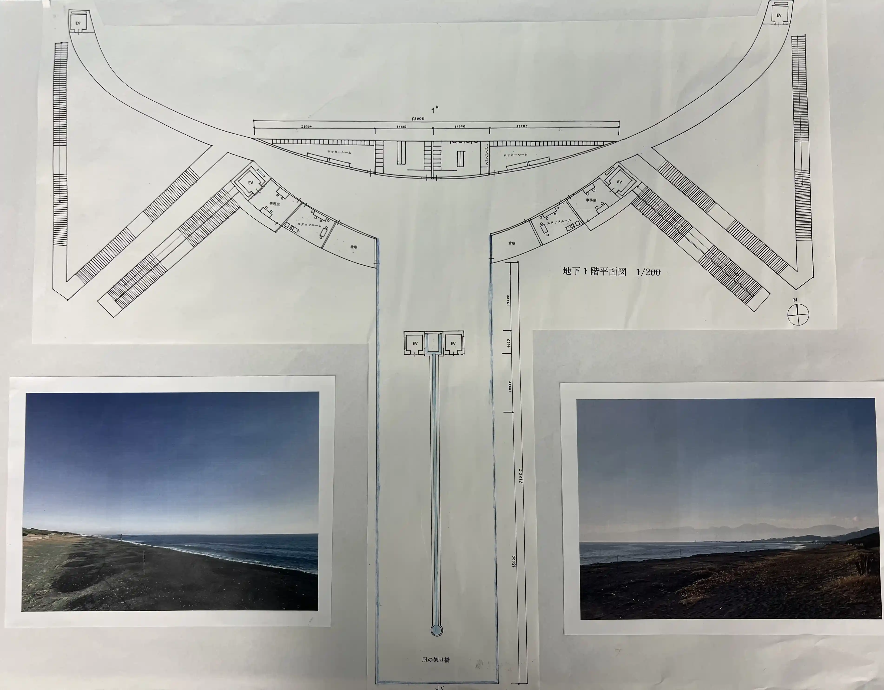
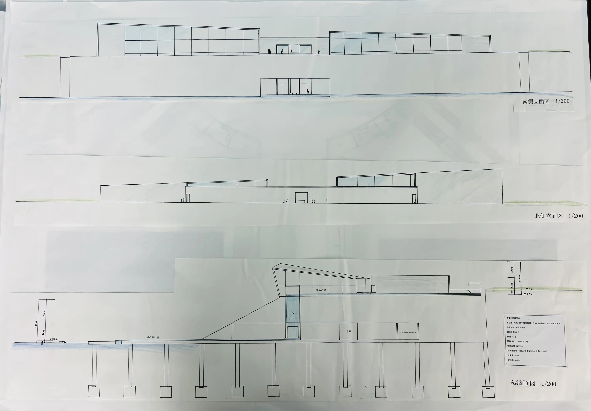

設計趣旨
慶弔を両立するために潮の満ち引きを利用し、天候が良ければ月に一度満月の日に現れ、一度の行事ごとに海へと沈み清められる。そんな一生に一度の空間で一生に一度の行事を行える施設を設計した。また、架け橋に隣接した想いの場を設計した。この想いの場は、海を愛し亡くなられた方の墓標を置くことで、見守られながらこの架け橋で行事を行える。例えば、最愛の方が先に亡くなられ生きている間に見守られながら葬式を行うという生前葬です。想いの場は、亡くなられた方が見守る施設でもあり、亡くなられた方と海に会いに来る施設でもある。
凪の架け橋
この潮の満ち引きで現れる凪の架け橋は,この平塚市の潮の満ち引きを利用し、満月の日には1.4mもの潮差が生まれる。この敷地のロケーションを生かすために浜から60m架け橋を伸ばすことで北西に位置する富士山が見え、360度の景色を楽しむことが出来き、先端が海へと開けるように広がっている為、現れた時に精神性を感じ佇む様なデザインにした。また、中心を流れる水は、亡くなられた方の想いを載せ、今生きている人の道しるべとなる意味合いがあり、行事に訪れる人が中心を流れる水に沿って歩くことで、架け橋の先端まで行くことができ、この水は最後海へと流れ着く。
想いの場
この墓標が置かれた想いの場は、目の前に広がる湘南の海を、愛し亡くなられた方に会いに来る空間です。湘南には海を身近に感じ愛している人が多いと感じる。施設を２つに分けた理由として、亡くなられた方の思い出は、地元の浜や、サーフィンによく訪れた浜など、それぞれの思い出の地があるので、それに対して墓標を置けるように２つの空間に分けた。この理由以外にもこのロケーションを生かし南にある大島から中心だけに潮風が流れ、２つに分けた施設のそれぞれの先端に、東側は江ノ島、西側は真鶴半島として、立地を生かし空間ごとにシンボルになる景色を配置するように計画した。
設計背景
この設計敷地である湘南の海沿いには、海に隣接した斎場のような空間がなく、幼い頃から湘南の海が身近にあり、この海で育ってきた人たちが、最後もこの海へと送り出されるような空間が必要であると感じた。この敷地は元々龍城ヶ丘プールがあり、閉鎖してから 8 年が過ぎました。実際にこの跡地は、2021年の12月から施工が始まり、目的を持って訪れる公園へと生まれ変わる。この公園を批判する訳ではないが、湘南には目的を持って地元ではない県外の人などが訪れる空間は、山ほど存在する。私は、この地元の人が愛した海を変わらず愛し続けられるようなそんな存在の施設になってほしいと考えている。建物は建て変わり、県外からも観光客が訪れる中で、変わり果てない街並みや、変わらない空間、変わらない海など、変わり果てない存在で、湘南の歴史を積み上げていってほしいと願いを込めて設計した。
設計図
- 
- 